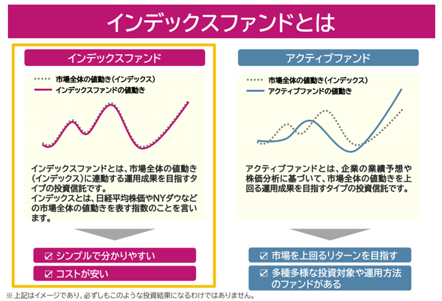

2022/10/21
インデックス投資とは
money


←投資やってみたいって思ってる人 「投資に興味があるけど、難しそう、、、大きな損失とか出たりしたら大変かもな、、、そこのどうなんだろう？」
このblogではそういった疑問を解決していきます。
インデックス投資とは。
今回の道標
- ①そもそもインデックスって何？
- ②インデックス投資のメリット・デメリット
- ③インデックス投資の種類
- ④最後にまとめ
記事の信頼性
筆者自身、投資を今現在行っています。わかりやすく説明していこうと思います。
前置きメッセージ
この記事では「インデックス投資とは、どういうものなのか？」をまとめております。ぜひ最後までご覧ください。
この記事を読み、どんな感じなのかを大雑把に理解し、行動に移すということがとても大切です。一つ一つ噛み砕いて自分のものにしていってください！。
①そもそもインデックスって何？

そもそもインデックスとは、株価指数のことを言います。株価指数とは、要は市場の動きを表したもので、たくさんの銘柄で構成されているため、広範な分散投資が可能です。アクティブ投資というのは、企業の業績などに左右され、一般の人から見ると、実際どうなっているかがわかりにくいです。下記の画像を参照ください。
インデックス投資は、広範囲に分散して、投資を行うことができ、資産を増やす上で、大事な分散投資をやってくれています。
アクティブ投資の方は、企業の業績の確認など、初心者には難しいものになってくると思われます。しかし、ファンドマネジャーやアナリストと呼ばれる人が、優秀な銘柄を厳選してくれて、より良い運用をすることが可能となります。
②インデックス投資のメリット・デメリット

インデックス投資には、デメリットもあるので、注意してください。
メリット
購入時手数料や信託報酬などのコストが低い
やっぱり、コストが安いのは魅力ですよね。
分散投資ができる
たくさんの銘柄をまとめたものなので、リスクを軽減できます。
値動きがわかりやすい
アクティブ投資とは違い、市場に密接に関わっているため、経済の動きなどから素人目でも判断がしやすいです。
デメリット
市場を上回るリターンは狙いにくい
大きい利益は得づらいのがやっぱり欠点です。
短期間で大きな利益を得られにくい
インデックス投資は、長期的にみないと、稼ぎにくいです。
元本割れのリスクがある
元本割れのリスクがあることは頭の片隅に置いといてください。どんな投資にもリスクはつきものです。リスク管理をしっかりしながら、余裕のある範囲で投資を行なってください。
③インデックス投資の種類

インデックス投資の種類はたくさんあるので、まとめてみました！
おすすめ4選
- ① : eMAXIS Slim 全世界株式（オール・カントリー）
- ② : 東京海上ターゲット・イヤー・ファンド2055
- ③ : GS日本フォーカス・グロース毎月決算コース
- ④ : 最後にまとめ
① : eMAXIS Slim 全世界株式（オール・カントリー）
全世界の株式に分散投資ができます。
② : 東京海上ターゲット・イヤー・ファンド2055
国内の株と債権に分散投資できます。安定性資産の比率を年々増加させる方針で運用されています。
日本株式・Jリートバランスファンド
不動産投資信託を含んだ運用をしています。低コストで運用できるのが魅力です。
③ : GS日本フォーカス・グロース毎月決算コース
じわじわと人気が出てきています。継続して、保有するのがお勧めです。
④最後にまとめ

他にもいろんな、インデックス投資の種類があるので、自分がこれだと思ったやつに、ぜひ投資してみてください。何事も動かないと始まりません。口座を作ってない人はまず、口座を作ってみて、少額でいいので、投資をしてみてください！
ここまで、みてくださり、ありがとうございます。質問などありましたらご連絡ください。
よくある質問 : Twitterで募集します

相談

よく読まれてる記事

2022 10/14
[初心者用]プログラミングの勉強の仕方
2022 10/16
ハッカーになるにはこんなにも努力が必要なんだ！
archive
- 2022 11月
- 2022 10月